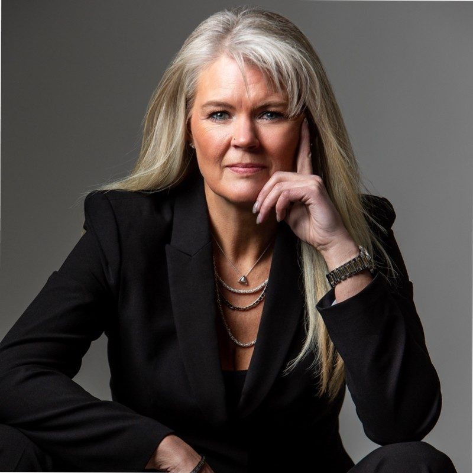
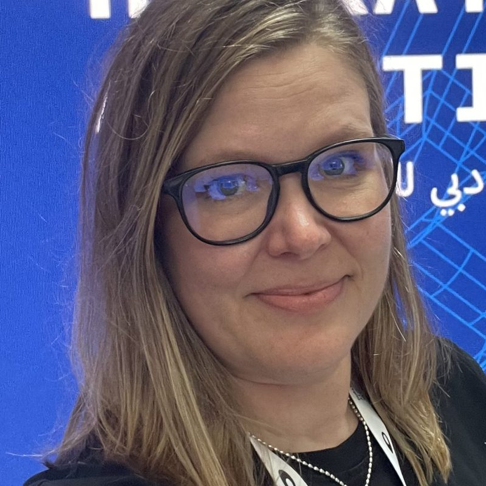
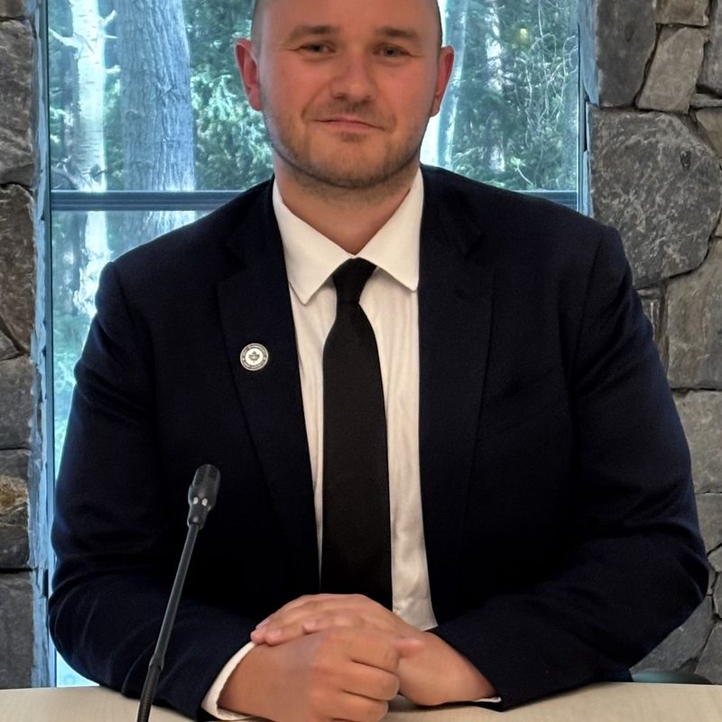
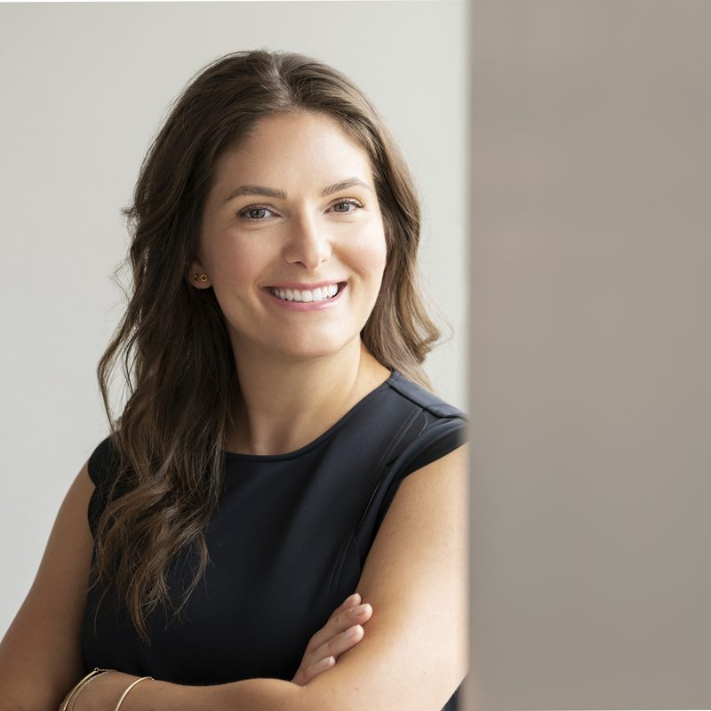

Who we are
Our team
Leadership
Katja Boutou
Director, Strategic Growth & Industry Engagement
ConvergX Global Solutions Foundation


Lindsay Robertson
Senior Manager, Marketing, Communications and Commercial Readiness
ConvergX Global Solutions Foundation
Sean Secord
Senior Advisor, Strategic Partnerships & Northern Initiatives
ConvergX Global Solutions Foundation
Sylvain Bédard
Senior Advisor, Strategic Partnerships & Government Relations
ConvergX Global Solutions Foundation
Frances Doria
Business development and Sponsorship
ConvergX Global Solutions Foundation
Get in touch
ContactFor general inquiries, send a note and the right person at ConvergX will follow up.